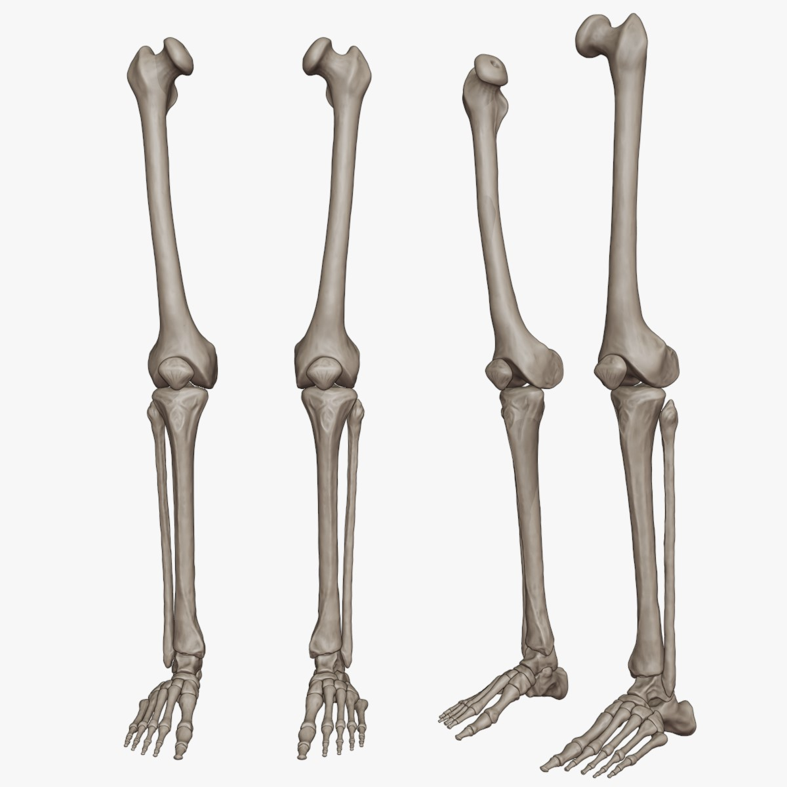
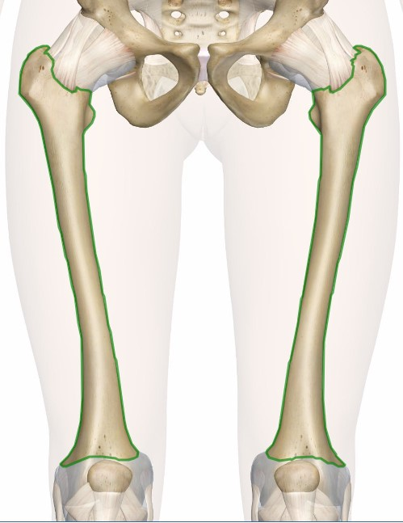
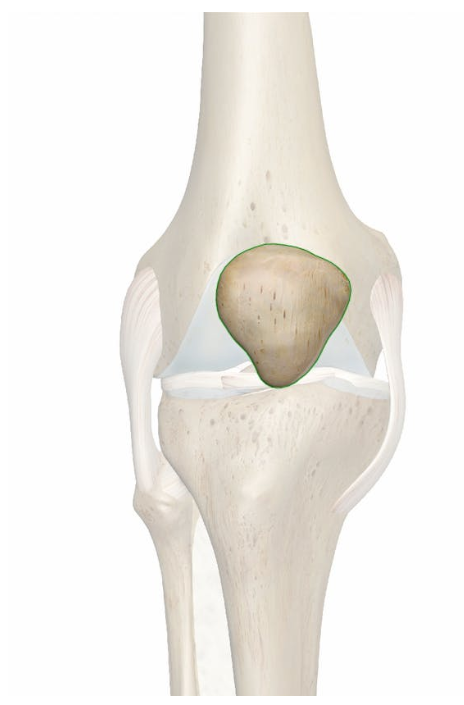
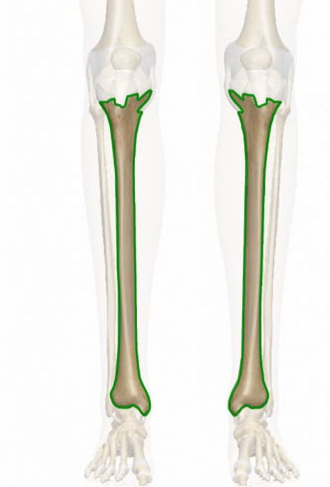
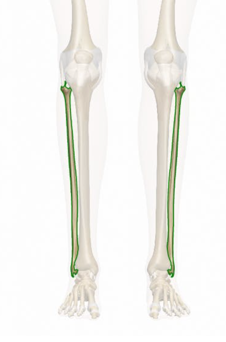
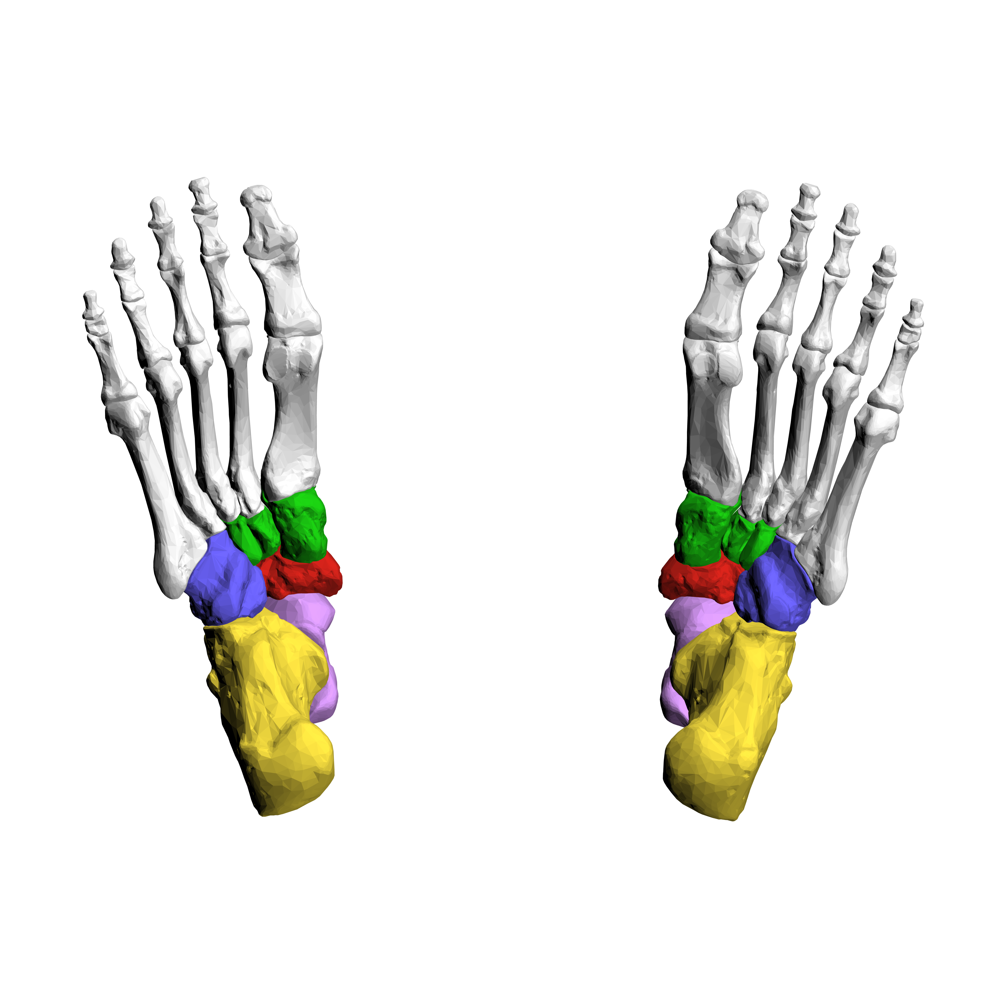
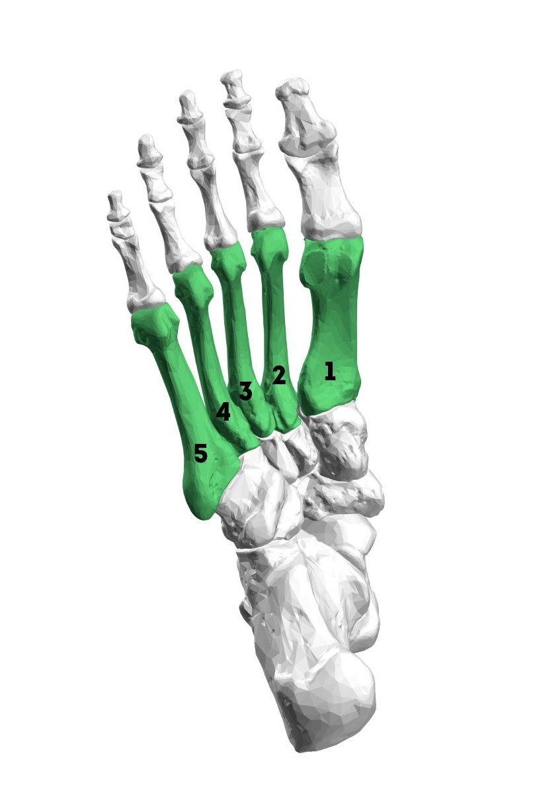
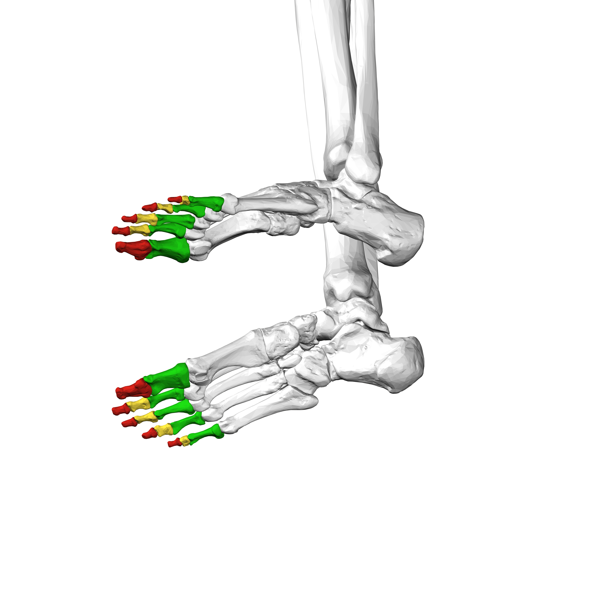

The lower limbs comprise the structures below the pelvis, including the femur, patella, tibia, fibula, tarsal bones, metatarsal bones, and phalanges. These bones form the framework for locomotion, weight-bearing, and balance. Joints such as the hip, knee, and ankle facilitate movement, while muscles, ligaments, and tendons provide stability and control. The lower limbs are essential for activities ranging from walking and running to more complex movements like jumping and dancing. Their anatomy reflects a balance of strength, flexibility, and precision, allowing for diverse functions essential for daily life and physical activity.

 The femur is the longest and strongest bone in the human body.It extends from the hip joint to the knee joint. It consists of a shaft and two ends: the proximal end (which articulates with the hip bone) and the distal end (which articulates with the tibia and patella).The femur is essential for weight-bearing and supports the body's entire weight during activities such as walking, running, and jumping.
 The patella is a small, flat, triangular bone located in the front of the knee joint.It lies within the tendon of the quadriceps muscle.The patella acts as a protective bone for the knee joint and also provides mechanical advantage to the quadriceps muscle by increasing its leverage during knee extension movements.
 The tibia is a large, strong bone located in the lower leg.It is the main weight-bearing bone of the lower leg and is essential for stability and support during weight-bearing activities.The proximal end of the tibia articulates with the femur to form the knee joint, while the distal end articulates with the talus bone to form the ankle joint.The tibia is crucial for transmitting forces from the femur to the foot during activities such as walking, running, and jumping.
 The fibula is a slender bone located on the lateral side of the lower leg.It runs parallel to the tibia but is much thinner and less weight-bearing.The fibula provides attachment sites for muscles and ligaments that stabilize the ankle and foot.While the fibula plays a minimal role in weight-bearing, it contributes to the stability of the ankle joint and helps to distribute forces during weight-bearing activities.
 The tarsal bones are a group of seven bones located in the ankle region.They include the talus, calcaneus, navicular, cuboid, and three cuneiform bones (medial, intermediate, and lateral).These bones form the ankle and subtalar joints and provide stability and support to the foot.The tarsal bones are arranged in a complex architecture that allows for a combination of stability and flexibility, enabling various movements of the foot.
 The metatarsal bones are five long bones located in the midfoot region.They articulate with the tarsal bones proximally and the phalanges distally.The metatarsal bones provide support for the arches of the foot and serve as a base for the toes.
 The phalanges are the bones of the toes.Each toe (except the big toe) has three phalanges: proximal, middle, and distal.The big toe (hallux) has two phalanges: proximal and distal.The phalanges provide leverage and support for movements such as walking, running, and balance.